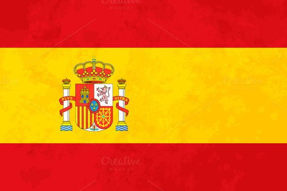

Monaco
Circuit De Monaco
First Held: 1950
Laps: 78
Circuit length: 3.3km
First Held: 1950
Laps: 78
Circuit length: 3.3km
| Pos | Driver | Team | Time |
|---|---|---|---|
| 1. |  M.Verstappen M.Verstappen |
Red Bull | 1:48:51.980 |
| 2. |  F.Alonso | Aston Martin | +27.921s |
| 3. | E.Ocon | Alpine | +36.990s |
| Stats | |
|---|---|
| First Held | 1929 |
| Laps | 78 |
| Lap Distance | 3.3km |
| Total Distance | 260.3km |
| Fastest Lap time | 2021-1:12.909 |
| Most Wins-Driver |  Artyon Senna - 6 Artyon Senna - 6 |
| Most Wins - Team |  McLaren - 15 McLaren - 15 |
| Winners | |
|---|---|
| Max Verstappen | 2023 |
| Sergio Perez | 2022 |
| Max Verstappen |
2021 |
| Lewis Hamilton |
2019 |
 Daniel Ricciardo Daniel Ricciardo |
2018 |